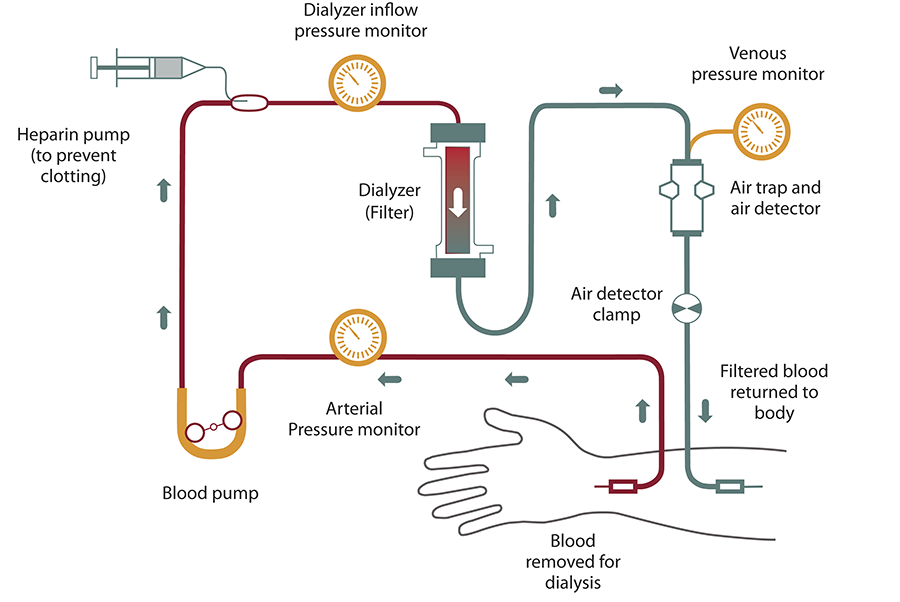
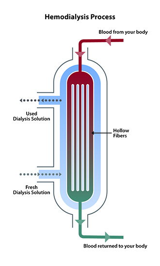
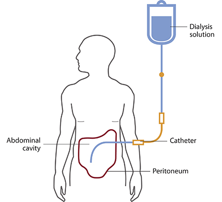
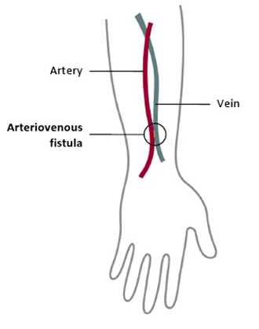
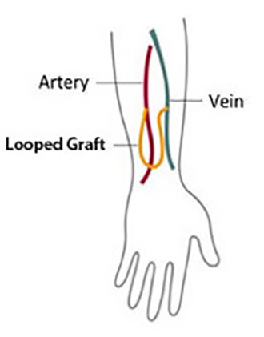

處置
Dialysis ｜ 透析 · Renal replacement therapy 筆記更新 2026-07-28· 整理狀態：可用
加入閱讀清單 其他名稱 12 Dialysis · 透析 · 洗腎 · RRT · Renal replacement therapy · HD · Hemodialysis · 血液透析 · PD · Peritoneal dialysis · 腹膜透析 · AEIOU
一句話總覽
透析靠半透膜做兩件事，而且這兩件事是獨立的兩條軸 ：擴散（濃度梯度）清溶質 、超過濾／對流（壓力或滲透梯度）清水 ——所以病人可以「洗得乾淨卻一直水腫」，也可以「不水腫但尿毒素降不下來」。起始指徵永遠是「症狀 ＋ 頑固性」，不是任何一個 Cr 或 BUN 的數值。
30 秒行動卡
最該記的適應症 ：AEIOU ── A cidosis（頑固性代謝性酸中毒）／E lectrolytes（頑固性高血鉀）／I ntoxication（可透析毒物）／O verload（頑固性容積過多、肺水腫）／U remia（心包膜炎、腦病變、出血傾向）。每一項都要加上「保守治療無效」這個前提。
做之前一定要確認 ：血管通路可不可用 、乾體重與這次要拉多少水 、血壓撐不撐得住 、抗凝怎麼給 、首次透析要不要降效率 。
絕對不可 ：用 Cr 或 BUN 的絕對數值 當指徵；在未經藥物治療 的高血鉀直接推進透析室；首次透析 就用高效率長時間把尿素快速降下來。
原理與目的
flowchart TD
A["尿毒素與水滯留"] --> B["半透膜兩側<br/>建立梯度"]
B --> C["擴散<br/>濃度梯度清小分子"]
B --> D["超過濾／對流<br/>壓力或滲透梯度清水"]
C --> E["溶質清除<br/>K、尿素、氫離子"]
D --> F["容積移除"]
E --> G["症狀與生化改善"]
F --> G
classDef key fill:#1b5e20,stroke:#0b3d0b,color:#fff,font-weight:bold
class G key
筆記中的流程與關係
血液透析迴路 Dialyzer 內逆流交換


血液由通路引出，經幫浦、壓力監測與 dialyzer，再通過 air detector 回到病人
血走 hollow fiber 內、透析液在外側反向流動，維持整段濃度梯度
Source: NIDDK Hemodialysis （NIH educational illustrations）。
兩條軸要分開想
溶質清除靠擴散 （血流速、透析液流速、膜面積、透析時間決定）；水分移除靠超過濾 （跨膜壓或滲透劑決定）。兩者可以一好一壞 ——看到「洗得乾淨卻一直水腫」就想腹膜高通透 ；看到「不水腫但尿毒素降不下來」就想低通透 。把兩者混為一談是最常見的推理錯誤。
適應症 Indications
適應症
判斷閾值／時機
A cidosis頑固性代謝性酸中毒 ，補碳酸氫鈉無效或因容積無法給
E lectrolytes頑固性高血鉀 （藥物治療後仍高或反覆）；亦含頑固性高血鈣、腫瘤溶解症候群的高血磷
I ntoxication可透析毒物 ：分子小、蛋白結合低、分布體積小、水溶性 （甲醇、乙二醇、salicylate、lithium、metformin 造成的乳酸中毒）
O verload頑固性容積過多／肺水腫 ，利尿劑無效
U remia尿毒性心包膜炎、腦病變、出血傾向、頑固性噁心嘔吐
CKD 的擇期起始依症狀不依數字 ：一般 eGFR 5–10 且出現尿毒症狀 。IDEAL 試驗顯示早開始（eGFR 10–14）與晚開始（5–7）存活率無差別
「頑固性」三個字不能拿掉
「若併發肺水腫、高血鉀、代謝性酸中毒則應立即透析 」是過度的敘述 ——正確版本是「保守治療無效時 才透析」。同樣地，沒有任何一個 Cr 或 BUN 數值本身可以當作指徵 ：「Cr > 8 就該透析」「eGFR < 15 就應開始透析」都是錯的。
例外只有一個方向：可透析毒物中毒 時，透析本身就是解毒手段，不必等「保守治療無效」。
兩種模式的取捨
血液透析 (HD) 腹膜透析 (PD)
清除方式
間歇、快 （通常每週 3 次、每次 4 小時）連續、慢 （每日多次交換或夜間機器）
通路
AVF ＞ AVG ＞ 導管 腹膜透析導管
血行動力學
較不穩，易發生透析中低血壓 較穩定 ，適合心臟功能差者
殘餘腎功能
掉得較快
保留較久
主要併發症
低血壓、抽筋、失衡症候群、通路狹窄與感染
腹膜炎 、疝氣、透析液滲漏、膜衰竭 、代謝負擔（葡萄糖）
生活型態
每週到院
居家、自主性高 ，但需病人或照顧者能操作

PD 將透析液灌入腹腔，以腹膜微血管與透析液之間的梯度清除溶質與水，再把舊液引流出去。Source: NIDDK Peritoneal Dialysis （NIH educational illustration）。
腹膜通透性與留滯時間必須「反向」設定
用 peritoneal equilibration test (PET) 分高／低通透。高通透 → 短留滯；低通透 → 長留滯。
為什麼高通透的人「留久了反而更腫」 ：高通透膜對葡萄糖吸收快，留太久葡萄糖被吸光、滲透梯度消失 → 水從腹腔回流到體內 ，超過濾變成負的。所以高通透病人適合夜間機器透析（CCPD／APD，短留滯多次） ；低通透病人適合傳統 CAPD（長留滯） 。
滲透劑的選擇取決於留滯時間 ：短留滯用葡萄糖就夠（梯度還在）；最長的那一次留滯必須用 icodextrin （葡萄糖已被吸光），且 icodextrin 每天只用一次 。
icodextrin 的必考副作用 ：代謝產物麥芽糖會干擾使用 glucose dehydrogenase pyrroloquinoline quinone (GDH-PQQ) 試紙的血糖機，造成血糖被假性高估 → 病人可能被誤打胰島素而發生嚴重低血糖。糖尿病 PD 病人用 icodextrin 前必須確認血糖機型號。
不要長期依賴 4.25% 高濃度葡萄糖藥水 維持超過濾——會加速腹膜損傷與代謝負擔。「短期用」與「長期依賴」是兩件事。
術前準備與評估
項目
內容
血管通路 AVF 是首選 （感染與長期通暢率最好），但成熟慢 ：術後約 6 週 評估（KDOQI 舊版 rule of 6s：血流 > 600 mL/min、直徑 > 6 mm、距皮 < 6 mm），實際可穩定穿刺多需 2–3 個月 ，故傳統建議提前約 6 個月 建立；AVG 次之；導管最差 （感染與中央靜脈狹窄）
保護血管 預計做廔管那一側的手臂不可反覆抽血、打點滴、放 PICC ；避免鎖骨下靜脈導管（狹窄會讓同側廔管做不起來）
乾體重與超過濾量
依體重變化與臨床容積狀態設定；單次超過濾速率過快是透析中低血壓與抽筋的主因
抗凝
常規用 heparin；出血風險高者改用無肝素透析或局部 citrate
首次透析
降低血流速與時間、分次進行 ，避免失衡症候群
疫苗與代謝
B 型肝炎疫苗；蛋白質攝取上調至約 1.0–1.2 g/kg/day （與透析前的限蛋白方向相反）
AV fistula AV graft


直接把 artery 接到 vein；成熟較慢但感染少、通暢久，是長期首選
用人工血管連接 artery 與 vein；可較早使用，但感染與血栓較多
Source: NIDDK Hemodialysis – vascular access （NIH educational illustrations）。
併發症 Complications
併發症
何時出現
怎麼發現
怎麼處理
透析中低血壓 透析中後段
血壓下降、噁心、抽筋、打呵欠
見下方 callout
失衡症候群 (disequilibrium syndrome) 首次或前幾次透析 頭痛、噁心、意識改變、抽搐 （尿素降太快 → 腦水腫）預防為主：降低第一次透析的效率與時間 ；發生時減慢或停止
抽筋 透析中後段
下肢肌肉痙攣
超過濾過快或低於乾體重所致；調整乾體重與超過濾速率
首次使用症候群
開始後數分鐘至一小時
胸背痛、搔癢、過敏樣反應
與膜生物相容性有關；換膜
通路併發症 任何時間
血流不足、腫脹、發燒、菌血症
狹窄需介入；導管相關感染是透析病人菌血症的首位來源
腹膜炎（PD） 任何時間
透析液混濁 ＋ 腹痛 ± 發燒 見下方 callout
透析中低血壓：預防與處置是兩張不同的清單
所有預防措施都在做同一件事——讓血管收縮，或讓水從組織回到血管。 把每個選項問一次「它讓血管收縮還是擴張」，答案自己浮出來。
第一線 ：降低透析液溫度（約 35–36°C） 、避免透析中進食 （內臟血管會搶血）、透析前暫停降血壓藥 、控制超過濾速率與透析間體重增加 、midodrine。
次線（可考慮，別當常規） ：先超過濾後透析（sequential／isolated UF） ——長期用會犧牲溶質清除；提高透析液鈣濃度（1.25 → 1.5 mmol/L，即 2.5 → 3.0 mEq/L） ——機轉是提高心肌收縮力，但試驗結果不一致且犧牲鈣磷控制。
有害（擴張／降低血漿滲透壓） ：透析中進食、透析液加溫至體溫、醋酸鹽緩衝液、透析前服降壓藥、超過濾太快。
提高透析液鈉濃度確實能減少低血壓，但代價是口渴與透析間體重增加 ——屬於「有條件的正確」，不可常規使用 。
真的發生低血壓時 ：停止超過濾、頭低腳高（Trendelenburg）、給氧、快速輸注生理食鹽水 100–250 mL——這四件事同時做，不是照順序等 ；血壓回升後再減速重啟超過濾。降低透析液溫度是「預防復發」的措施，不是急救第一線。不是先給升壓劑。
腹膜炎：門檻、給藥途徑、拔不拔管
診斷門檻（ISPD 2022） ：下列三項至少符合兩項 ——① 臨床表現（腹痛 and/or 透析液混濁）② 透析液白血球 > 100/μL（須在留置至少 2 小時後採檢）且多形核球 > 50% ③ 培養陽性 。APD 短循環留置不足 2 小時時，看 PMN 百分比比看絕對白血球數可靠 。送細胞計數 ＋ 革蘭氏染色 ＋ 培養 。
治療 ：腹腔內給予抗生素 （涵蓋革蘭氏陽性與陰性 ），不是只給口服或靜脈 。多數不需拔管 ——需拔管的是頑固性、復發性、黴菌性、分枝桿菌性、腸道來源的腹膜炎。
診斷延遲的代價是腹膜纖維化與膜衰竭 ，等於失去這個治療模式。
透析中監測
要盯的
頻率
異常閾值／處置點
血壓
每 15–30 分鐘
收縮壓下降並伴症狀 → 停超過濾、平躺、給生理食鹽水
超過濾累積量
全程
超過設定或病人出現抽筋、低血壓 → 減速
通路
每次上針前後
震顫與雜音消失 → 疑血栓，立即評估
意識狀態
首次透析特別注意
頭痛、嘔吐、混亂 → 疑失衡症候群
透析後體重
每次
與乾體重的差距用來調整下次目標
禁忌與陷阱
絕對不可
情境
絕對不可
為什麼
該做什麼
高血鉀、肺水腫、酸中毒尚未給藥物治療
直接推進透析室
指徵是「症狀 ＋ 頑固性」 ，不是單一異常值先跑保守治療（鈣穩定心肌、insulin ＋ glucose、排鉀、利尿、補碳酸氫鈉），無效再透析
任何 Cr／BUN 數值
拿它當透析指徵（「Cr > 8」「eGFR < 15」）
無單一數字可用 ；IDEAL 顯示早開始無存活益處依 AEIOU 症狀 決定；擇期起始一般在 eGFR 5–10 且有症狀
首次透析、BUN 很高 用高效率、長時間快速把尿素降下來
失衡症候群 → 腦水腫、抽搐降低第一次的血流速與時間、分次進行
PD 病人透析液混濁、腹痛
只給口服抗生素或先觀察
腹膜炎延誤會造成腹膜纖維化與膜衰竭
送細胞計數與培養 ，腹腔內 給涵蓋 G(+)／G(−) 的抗生素
使用 icodextrin 的糖尿病 PD 病人
憑 GDH-PQQ 血糖機 數值打胰島素
麥芽糖造成假性高血糖 → 誤打胰島素 → 嚴重低血糖 確認血糖機型號，改用葡萄糖氧化酶法試紙
預計做廔管的手臂
反覆抽血、打點滴、放 PICC、放鎖骨下導管
破壞血管與中央靜脈狹窄，廔管做不起來
CKD G4 就開始保護非慣用手前臂
廣泛腹腔沾黏、未修補的腹壁疝氣、無法自我照顧且無照顧者
選擇 PD
導管無法放置或滲漏／感染風險過高
改走 HD ；PD 沒有絕對禁忌，但這幾項是相對禁忌中最硬的
常見錯誤
把「預防低血壓」與「已發生低血壓的處置」當同一張清單 ——前者是降溫、禁食、先超過濾；後者是停超過濾、平躺、給生理食鹽水。透析中鼓勵進食以改善營養 ——在營養的脈絡下對，在預防低血壓 的脈絡下就是錯的。同一句話，看題目在問什麼。高通透腹膜延長留滯時間 ——方向相反，會更水腫。高通透用短留滯，最長那次用 icodextrin。 把水分移除與溶質清除混為一談 ——兩條獨立的軸，可以一好一壞。忘記透析後蛋白質要上調 ——未透析限制約 0.8 g/kg/day（KDOQI 2020 更嚴：0.55–0.80），規則透析後上調至 1.0–1.2 g/kg/day ，方向相反。
相關連結
AKI — AEIOU 在急性情境的判準；透析只是撐橋，不加速腎臟恢復CKD — 何時開始、四根支柱、血管通路的提早規劃與蛋白質方向的翻面Hyperkalemia↗ — 「頑固性」的定義：藥物治療跑完仍高才算Anemia — 透析病人的 ESA 與鐵劑，以及 Hb 不追到正常的理由禁忌選項 — 上表已收錄
SOURCE & CONTEXT
來源與原始筆記 114-1 醫學(三) 24、114-2 醫學(三) 29、114-2 醫學(三) 30、114-1 醫學(三) 29 延伸；KDIGO 2012 AKI 指引（RRT 起始時機）；ISPD 腹膜炎指引（診斷門檻與治療原則）；IDEAL trial, NEJM 2010（透析起始時機）
下載這篇 Markdown ↗ 網站保留原筆記的內容與整理狀態。